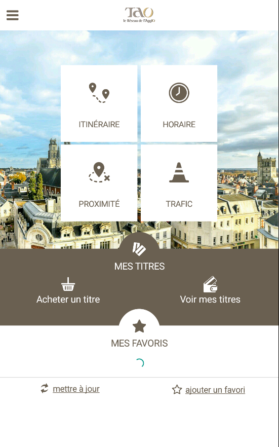
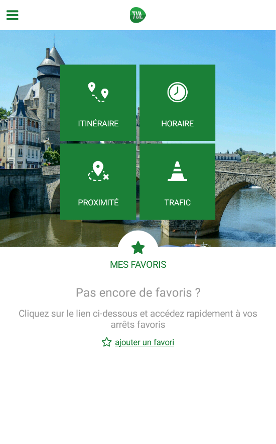
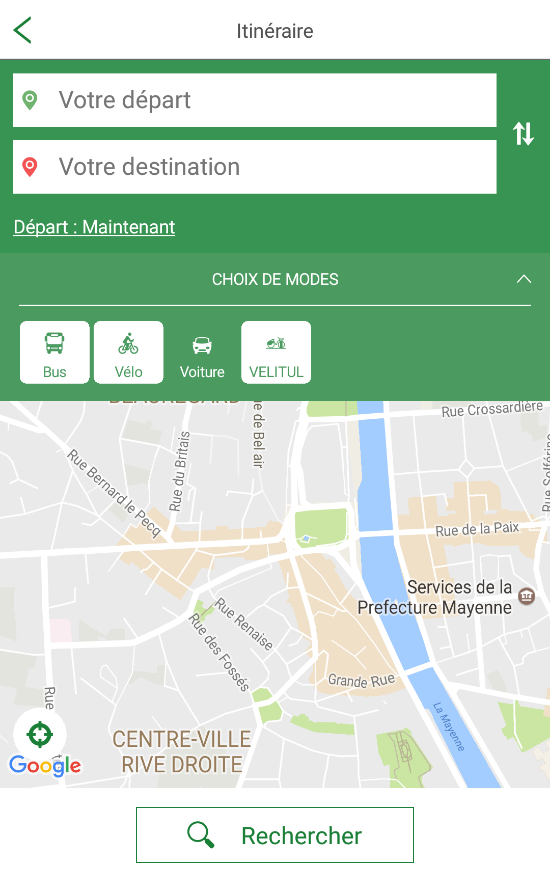
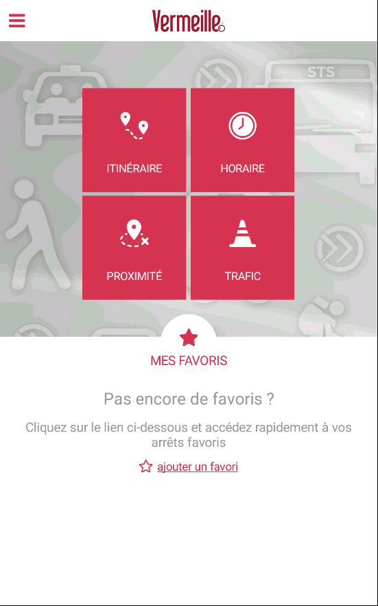
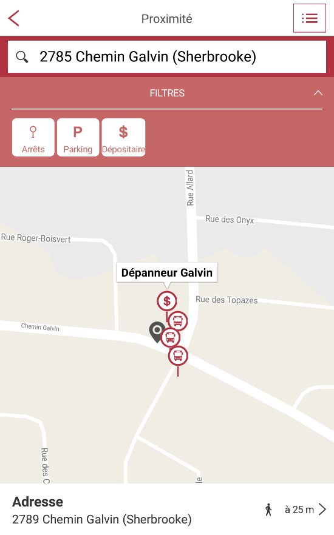
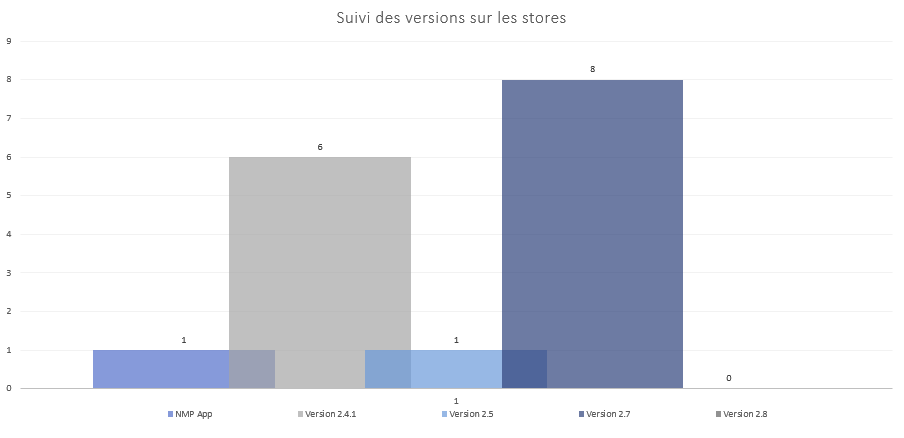

Sprint Review 3
Proudly presented by Sophie Béchaud & Thomas Noury.
(and Jennifer Gozo, Audrey Lustriat, Vincent Catillon, Jean-Baptiste Crestot and Benjamin Piscart)
Les sujets de la démo
- Ticket
- Book
- Déclinaisons
- Autres tâches
Avant tout... une petite intro
Finaliser les évolutions pour figer la 2.8
Etude de faisabilité de la V3
Choix de la techno :
React Native
- Structure en composants réutilisables
- Mise à jour du code sans recompilation
- Debug facile depuis un navigateur Chrome
Ticket
- User Story: Restreindre le message d'alerte de perte des titres anonymes,
uniquement s'il dispose de titres dans son portefeuille
Done!
- Modification de la version minimale de Android 4.3 à 4.4
contrainte module Masabi JustRide (portefeuille de titres)
Done!
Book
- User Story: Informer convenablement l'utilisateur sur la tarification
Done!
Déclinaisons
TAO pour tests Book & Ticket

TUL, mise à jour 2.7


Vermeille, préparation 2.8


Etat des lieux des versions chez les clients

Autres tâches
- Fix sur le temps réel des prochains passages des arrêts sur la home
- Fix sur le sens des lignes des favoris sur la home (TBM)
- Fix sur l'expiration du token Mon compte après une semaine
- Fix lien CGU sur TAO
- Comptes CMS créés pour Destineo et Jvmalin